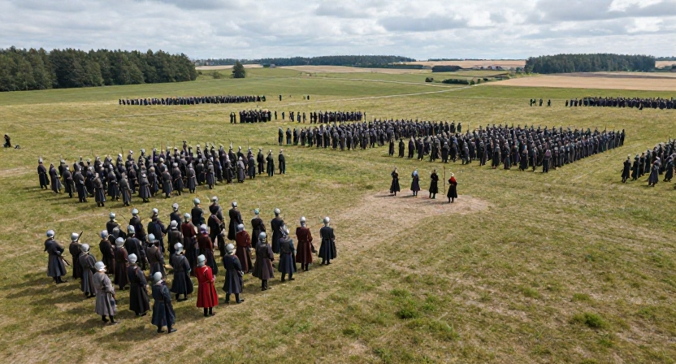

L'après midi arrivé, les troupes commencent à se mettre en formation afin de se préparer pour l'invasion. Heureusement pour vous, vous n'avez pas été assigné un supérieur directe et pouvez donc choisir quel battailon rejoindre parmi les 2 manquants des hommes.